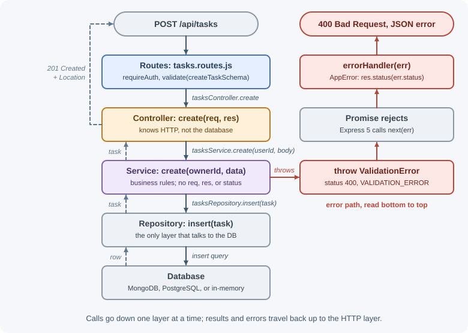
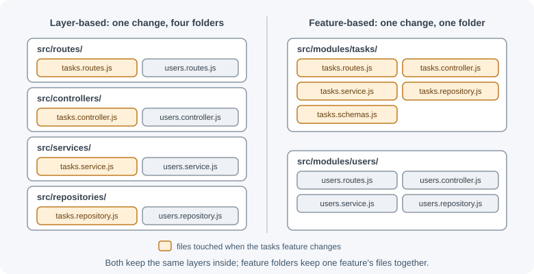

Structuring an Express Project¶
Express is unopinionated: it does not decide where routes, business logic,
or database code should live. A single index.js works for a tutorial, but a
real API needs a structure that keeps responsibilities separate, so code is
easy to find, test, and change. This lesson presents a layered structure,
compares it with feature-based organization, and walks one feature through
every layer.
Why it matters¶
Without structure, route handlers grow into hundreds of lines that parse requests, run business rules, query the database, and format responses all at once. That code is hard to test (you need a running server and database), hard to reuse (a cron job cannot call a route handler), and risky to change. A clear structure gives every piece of code one obvious home.
For broader architecture choices (monoliths, services, clean architecture), see software architecture.
Real-world usage¶
- Netflix used a hexagonal (ports and adapters) structure for a studio application so it could change where data came from. Its post Ready for changes with Hexagonal Architecture explains the goal: "the ability to swap data sources without impacting business logic", and notes that most tests could verify business logic without relying on protocols that easily change. That is the same reason this lesson keeps services free of HTTP and database details.
- Shopify kept one large codebase but organized it by business domain. In Deconstructing the Monolith it describes evolving into a modular monolith: all code in one codebase, but with boundaries "defined and respected between different components", and dependencies isolated by decoupling business domains: feature-based structure at a very large scale.
- NestJS, a Node.js framework that can run on Express, builds this structure in: its modules documentation recommends modules as "the recommended way to organize your components" and groups closely related controllers and services into feature modules.
Popular tools: express-generator (a starter skeleton), NestJS for an
opinionated module structure, and eslint-plugin-import (its no-cycle
rule catches circular imports between layers).
How it works¶
The layers¶

| Layer | Responsibility | Must not |
|---|---|---|
| Routes | Map method + path to controller functions; attach middleware (auth, validation) | Contain logic |
| Controllers | Translate HTTP into function calls: read params/body, call a service, choose the status code | Query the database or hold business rules |
| Services | Business logic: rules, calculations, coordinating repositories and external APIs | Touch req/res or status codes |
| Repositories / models | Read and write data; hide query details | Know about HTTP or business rules |
The key rule: dependencies point downward. A service never imports a controller, and a repository never imports a service. Because services do not know about HTTP, the same service can be called from a route, a background job, a CLI script, or a test.
A layer-based folder tree¶
my-api/
├── package.json
├── .env.example # documents required variables, no real values
├── src/
│ ├── server.js # starts listening; handles shutdown
│ ├── app.js # builds and exports the Express app
│ ├── config/
│ │ └── index.js # reads and validates environment variables
│ ├── routes/
│ │ ├── index.js # mounts all routers under /api
│ │ └── tasks.routes.js
│ ├── controllers/
│ │ └── tasks.controller.js
│ ├── services/
│ │ └── tasks.service.js
│ ├── repositories/
│ │ └── tasks.repository.js
│ ├── middleware/
│ │ ├── auth.js
│ │ ├── validate.js
│ │ └── error-handler.js
│ ├── validation/
│ │ └── tasks.schemas.js
│ ├── errors/
│ │ └── app-error.js
│ └── utils/
└── test/
└── tasks.test.js
Splitting app.js and server.js¶
app.js creates and configures the app and exports it without calling
listen(). server.js imports the app, starts the HTTP server, and handles
shutdown. Tests can then import the app and send requests to it in memory,
with no port and no running server. See
testing Express APIs.
A configuration module¶
Read environment variables in one place, validate them at startup, and
export a typed, frozen object. The rest of the code imports config instead
of reading process.env everywhere. If a required variable is missing, the
process fails immediately at boot instead of later in a random request. See
process, environment variables, and configuration.
Light dependency injection¶
Instead of each module importing its dependencies directly, a factory function receives them:
export function createTasksService({ tasksRepository, clock = Date }) {
/* ...uses tasksRepository and clock instead of importing them... */
}
This makes swapping dependencies trivial: tests pass an in-memory repository,
production passes a database one. You do not need a dependency-injection
framework; factory functions and one place that wires everything together
(often app.js) are enough.
Layer-based vs feature-based structure¶
A feature-based (modular) structure groups files by business feature:
src/
├── modules/
│ ├── tasks/
│ │ ├── tasks.routes.js
│ │ ├── tasks.controller.js
│ │ ├── tasks.service.js
│ │ ├── tasks.repository.js
│ │ └── tasks.schemas.js
│ └── users/
│ └── ...
└── shared/
├── middleware/
├── errors/
└── config/
| Layer-based | Feature-based | |
|---|---|---|
| Finding code | By technical role | By business feature |
| Changing one feature | Touches many folders | Touches one folder |
| Small apps | Simple and familiar | Slightly more ceremony |
| Large apps / teams | Folders become very long | Scales well; features can be owned by teams |
| Extracting a service later | Harder | Easier: the module is already self-contained |

Both use the same layers inside. Many teams start layer-based and move to feature-based as the app grows.
Naming conventions¶
- Use one style consistently, such as
tasks.service.jsortaskService.js. - Name routers by resource (
tasks.routes.jsmounted at/tasks). - Name controller functions after actions:
list,getById,create,update,remove. - Put custom error classes in one place so the error handler can recognize them.
npm scripts¶
{
"type": "module",
"scripts": {
"dev": "node --watch --env-file=.env src/server.js",
"start": "node src/server.js",
"test": "node --test",
"lint": "eslint ."
}
}
TypeScript note¶
The same structure works in TypeScript. Common setups are compiling with
tsc to a dist/ folder for production and using a runner such as tsx
for development. Install @types/express for type definitions. Recent Node
versions can also run TypeScript files directly by stripping type
annotations (only syntax that can be erased); check the Node.js
documentation for your version before relying on it.
When to use and when not to use¶
Use a layered structure (routes, controllers, services, repositories) when:
- The API has more than a handful of endpoints or more than one developer.
- Business logic must be reused outside HTTP: background jobs, CLI scripts, message consumers.
- You want fast unit tests of business rules without a server or database.
Keep it simpler when:
- The service is tiny (a webhook receiver, a proxy with two routes): one file with clear functions is easier to read than ten folders.
- You are prototyping and expect to throw the code away.
| Structure | Best for | Trade-off |
|---|---|---|
| Single file | Prototypes, tiny services | Becomes unmanageable quickly |
| Layer-based folders | Small to medium APIs, one team | One feature is spread across many folders |
| Feature-based modules | Larger APIs, several teams | More upfront organization |
| Opinionated framework (NestJS) | Teams wanting enforced conventions and dependency injection | More concepts and boilerplate |
| Separate services | Independent scaling or deployment needs | Distributed-system complexity; see software architecture |
Practical examples¶
The following implements "create and list tasks" through every layer. It runs as-is with an in-memory repository.
src/errors/app-error.js¶
export class AppError extends Error {
constructor(message, status = 500, code = "INTERNAL_ERROR") {
super(message);
this.status = status;
this.code = code;
}
}
export class NotFoundError extends AppError {
constructor(message = "Not found") { super(message, 404, "NOT_FOUND"); }
}
export class ValidationError extends AppError {
constructor(message, details) {
super(message, 400, "VALIDATION_ERROR");
this.details = details;
}
}
src/repositories/tasks.repository.js¶
// The only module that knows how tasks are stored.
export function createInMemoryTasksRepository() {
const tasks = new Map();
return {
async insert(task) { tasks.set(task.id, task); return task; },
async findById(id) { return tasks.get(id) ?? null; },
async findByOwner(ownerId) {
return [...tasks.values()].filter((t) => t.ownerId === ownerId);
},
};
}
A MongoDB or PostgreSQL version would expose the same three functions.
src/services/tasks.service.js¶
import { NotFoundError, ValidationError } from "../errors/app-error.js";
// Business rules only: no req, no res, no status codes chosen here.
export function createTasksService({ tasksRepository }) {
return {
async create(ownerId, { title, dueDate }) {
if (dueDate && new Date(dueDate) < new Date()) {
throw new ValidationError("Due date must be in the future");
}
return tasksRepository.insert({
id: crypto.randomUUID(), ownerId, title, dueDate: dueDate ?? null,
done: false, createdAt: new Date().toISOString(),
});
},
async list(ownerId) {
return tasksRepository.findByOwner(ownerId);
},
async get(ownerId, id) {
const task = await tasksRepository.findById(id);
if (!task || task.ownerId !== ownerId) throw new NotFoundError("Task not found");
return task;
},
};
}
src/controllers/tasks.controller.js¶
// Translates HTTP to service calls and back.
export function createTasksController({ tasksService }) {
return {
async list(req, res) {
res.json(await tasksService.list(req.user.id));
},
async getById(req, res) {
res.json(await tasksService.get(req.user.id, req.params.id));
},
async create(req, res) {
const task = await tasksService.create(req.user.id, req.body);
res.status(201).location(`/api/tasks/${task.id}`).json(task);
},
};
}
In Express 5, a rejected promise from these async handlers is passed to the
error handler automatically, so no try/catch is needed here.
src/routes/tasks.routes.js¶
import { Router } from "express";
export function createTasksRouter({ tasksController, requireAuth, validate,
createTaskSchema }) {
const router = Router();
router.use(requireAuth);
router.get("/", tasksController.list);
router.get("/:id", tasksController.getById);
router.post("/", validate(createTaskSchema), tasksController.create);
return router;
}
src/middleware/error-handler.js¶
import { AppError } from "../errors/app-error.js";
export function errorHandler(err, req, res, next) {
if (res.headersSent) return next(err);
if (err instanceof AppError) {
return res.status(err.status).json({ error: { code: err.code,
message: err.message, details: err.details } });
}
console.error(err); // replace with your logger
res.status(500).json({ error: { code: "INTERNAL_ERROR",
message: "Something went wrong" } });
}
src/app.js: wiring everything together¶
import express from "express";
import { createInMemoryTasksRepository } from "./repositories/tasks.repository.js";
import { createTasksService } from "./services/tasks.service.js";
import { createTasksController } from "./controllers/tasks.controller.js";
import { createTasksRouter } from "./routes/tasks.routes.js";
import { errorHandler } from "./middleware/error-handler.js";
import { ValidationError } from "./errors/app-error.js";
// Minimal stand-ins; real versions live in middleware/ and validation/.
const requireAuth = (req, res, next) => { req.user = { id: "u1" }; next(); };
const createTaskSchema = (body) =>
typeof body?.title === "string" && body.title.trim() !== "";
const validate = (schema) => (req, res, next) =>
schema(req.body) ? next() : next(new ValidationError("Title is required"));
export function createApp({ tasksRepository = createInMemoryTasksRepository() } = {}) {
const tasksService = createTasksService({ tasksRepository });
const tasksController = createTasksController({ tasksService });
const app = express();
app.use(express.json({ limit: "100kb" }));
app.get("/health", (req, res) => res.json({ status: "ok" }));
app.use("/api/tasks", createTasksRouter({ tasksController, requireAuth,
validate, createTaskSchema }));
app.use((req, res) => res.status(404).json({ error: { code: "NOT_FOUND",
message: "Route not found" } }));
app.use(errorHandler);
return app;
}
src/server.js¶
import { createApp } from "./app.js";
const port = Number(process.env.PORT ?? 3000);
const server = createApp().listen(port, () => {
console.log(`API listening on port ${port}`);
});
process.on("SIGTERM", () => server.close(() => process.exit(0)));
A request now flows: route → auth and validation middleware → controller → service → repository, and errors from any layer end up in one handler.
POST /api/tasks {"title":"Write notes"}
HTTP/1.1 201 Created
Location: /api/tasks/5c2f...
{"id":"5c2f...","ownerId":"u1","title":"Write notes","dueDate":null,
"done":false,"createdAt":"..."}
Best practices¶
- Keep
reqandresout of services; keep database calls out of controllers. - Export the app from
app.js; calllisten()only inserver.js. - Validate configuration once at startup in a config module.
- Wire dependencies in one place with factory functions.
- Throw typed errors from services and map them to HTTP in one error handler.
- Choose layer-based or feature-based structure deliberately, and apply it consistently.
- Keep shared code (
errors,middleware,config) separate from feature code. - Commit an
.env.examplelisting variable names, never real values.
In production¶
- A crash hours after deploy on one rarely used path. Detect: an error
such as
TypeError: Invalid URLor a connection error mentioningundefined, only on one feature. Cause: a missing environment variable read directly fromprocess.envdeep in the code. Fix: validate all configuration in the config module at startup so the process refuses to boot without it. - Tests hang or fail with
EADDRINUSEin CI. Detect: the test runner never exits, or reports the port is already in use when files run in parallel. Cause: the module tests import also callslisten(). Fix: export the app fromapp.jsand calllisten()only inserver.js. ReferenceError: Cannot access 'X' before initializationat startup. Detect: the error appears immediately on boot after a refactor. Cause: a circular import, often a lower layer importing a higher one. Fix: restore one-way dependencies and add a lint rule such asimport/no-cycle.- Scripts and tests connect to the real database unexpectedly. Detect:
connection logs or open handles when running a one-off script or unit
test. Cause: a module opens connections at import time. Fix: create
connections in the composition root (
server.jsorcreateApp) and pass them in. - A background job and the API disagree on business rules. Detect: data created by the job violates rules the API enforces. Cause: the rules live inside route handlers, so the job reimplemented them. Fix: move the rules into a service and call it from both.
Important terminology¶
- Layered architecture: Code organized into layers with one-way dependencies.
- Controller: Code that turns an HTTP request into a service call and the result into a response.
- Service: Code that implements business rules independently of HTTP.
- Repository: Code that hides how data is stored and queried.
- Dependency injection: Passing a module its dependencies instead of having it import them directly.
- Composition root: The single place where the application's objects are created and wired together.
- Feature-based structure: Organizing files by business feature rather than technical role.
Common mistakes and misconceptions¶
- Fat route handlers. Business logic inside routes cannot be reused or unit-tested easily.
- Passing
reqinto services. It ties business logic to HTTP and to Express. - Reading
process.enveverywhere. Missing variables are discovered late and scattered. - Calling
listen()in the file that tests import. Tests then fight over ports and leave servers running. - "More folders means better architecture." Structure should match the app's size; a tiny service does not need ten layers.
- Circular imports between layers. If a repository imports a service, the layering is broken.
Revision questions¶
- What is each layer (routes, controllers, services, repositories) responsible for?
- Why should services not use
reqorres? - What does splitting
app.jsandserver.jsmake easier? - How does a factory function provide dependency injection without a framework?
- When would you move from a layer-based to a feature-based structure?
- Why validate configuration at startup?